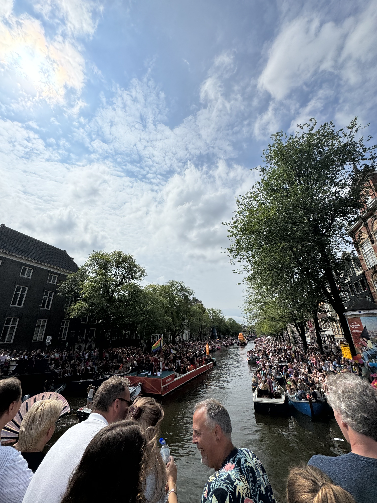
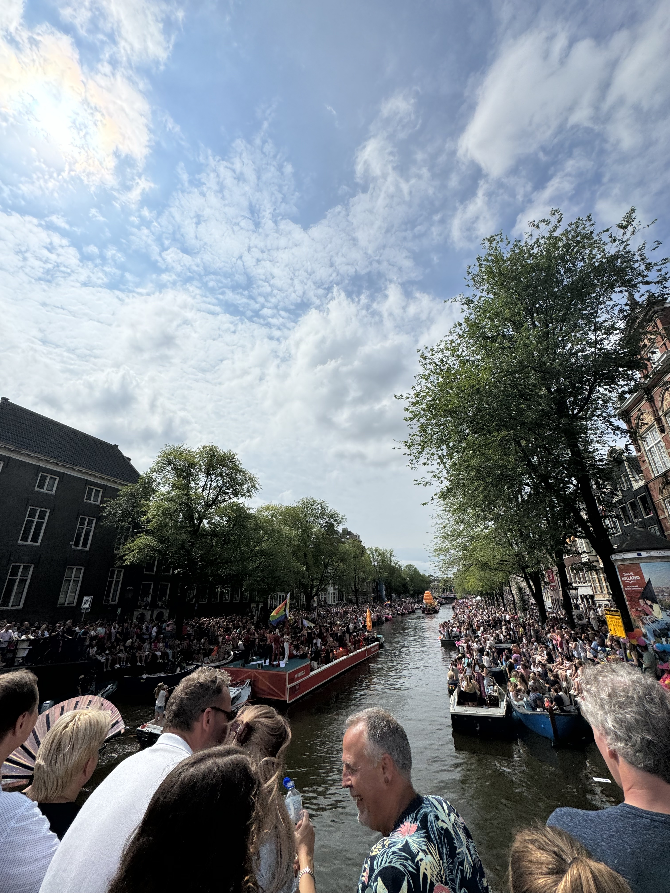

Awesome Art


The Van Gogh self-portrait was my favorite piece of art I saw on my whole trip. It was at the very end of the Rijks Museum. I wasn’t able to go to the Van Gogh Museum or the Anne Frank House because I didn’t book a reservation far in advance. Nonetheless, the Rijks museum had a little bit of everything and was extremely interesting, beautiful, and informative. Up close you can tell Van Gogh painted his portrait using small, careful, individual brush strokes but stepping back it looks perfect. The contrast between the two viewpoints of the painting is what makes it so impressive. The apartment building in the second picture is astonishingly modern architecture. You can see it from a mile away and it catches your eye so well that you want to go find it and see it up close.
I love rooftops and landscapes. This rooftop experience is on the other side of the river in North Amsterdam. I ate dinner in their restaurant and had some drinks with the friends I met in Belgium and partied with at Tomorrowland. We stayed on the roof until the sun went down to admire the city and take some pictures.
 

The staple of the city was its numerous canals. They’re everywhere. It gave Amsterdam its character as they’re everywhere. With tons of boats and water taxis, it was fun watching them go by. The canals gave off the feeling that you’re in the countryside close to a river even though you’re in one of the most famous cities in the world.
Pride Parade


My friend from college set me up with his friends to celebrate Pride. I was there at the perfect time to experience their week-long festival. There were canal parades all day long with people lining both sides, 10 rows back. It was difficult to see the parade from the canal side streets. Many people were partying in their apartments out of their windows. Just a wild celebration. Later into the night, there were tons of street parties with DJs and food.
Overall
I had the best time in Amsterdam. I was so lucky to hang out with people I already knew the whole time. It was so nice to have people to hang out with and not have to try to make friends all the time. Another funny thing was that it is so easy to tell Dutch people apart from tourists and people who moved there. All the Dutch people were over 6 feet tall with blonde hair.